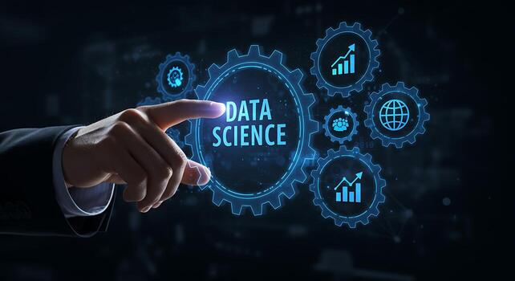
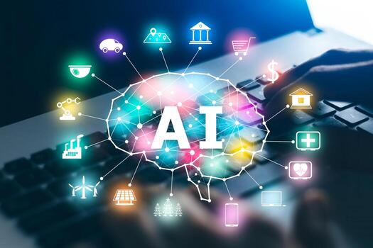

About Me
Hello! I'm Himanshu Singh Chauhan, an aspiring Software Engineer with a Bachelor's degree in Computer Science and Engineering. I enjoy building practical software solutions and continuously expanding my knowledge of modern technologies. My interests lie in full-stack web development, cloud computing, machine learning, and artificial intelligence. Throughout my academic journey, I have strengthened my programming skills in Java, Python, JavaScript, C, HTML, and CSS, along with a solid understanding of Data Structures & Algorithms, Object-Oriented Programming, Database Management Systems, and Operating Systems. I have completed multiple IBM SkillsBuild internships in Cloud Computing, Data Science, Machine Learning, and Artificial Intelligence, where I gained hands-on experience working with cloud technologies, data analysis, predictive modeling, and AI fundamentals. These experiences enhanced my problem-solving abilities and exposed me to real-world industry practices. One of my notable projects is the Farming Assistant Web Service, a platform designed to connect farmers directly with suppliers and buyers. Through this project, I gained practical experience in designing responsive web applications, implementing interactive features, and developing solutions that address real-world challenges. I am passionate about learning new technologies, writing clean and efficient code, and collaborating on innovative projects. As an aspiring Software Engineer, I look forward to contributing to impactful solutions while continuously growing as a developer and technology professional.
Work Experiences


